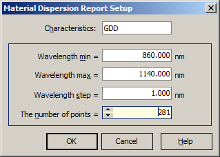

Material Dispersion Setup
Material Dispersion Setup
Navigation: OptiLayer Menu Commands > Results Menu >
Material Dispersion Setup
` <layer_absorptance_report_setup.html>`__ ` <idh_menu_results.html>`__ ` <u_and_g_values.html>`__
The Material Dispersion Report command is accessible from the Results Menu.

In the Material Dispersion Report Setup window, the user can select any combination of Ñharacteristics from the following list:
Phase
GD
GDD
It is also possible to set a wavelength range (Wavelength min, Wavelength max), a step of the wavelength grid, and the number of spectral points for the Material Dispersion Report. When you change one of these parameters, the other parameters are kept in correspondence automatically. Press OK to run the evaluation procedure and display the report.